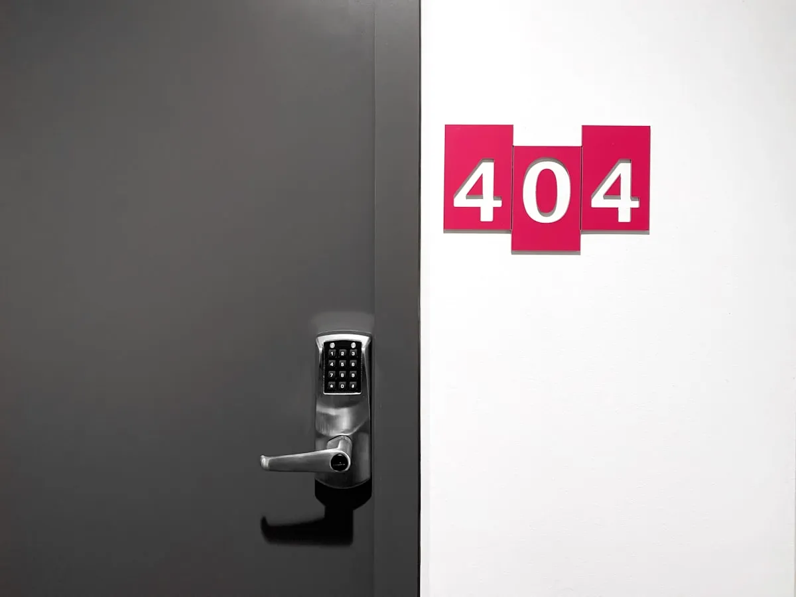

Pneumatic Line Launchers
Initial vertical insertion commences directly from our auxiliary tenders using compressed-air pneumatic launchers. These launchers fire titanium grapnels eighty metres vertically over sheer rock faces, trailing Dyneema pilot cords. Once purchase is validated by two independent static load tests, primary ascending lines are hauled taut and locked. It eliminates three hours of hazardous free-climbing over slick coastal guano.

FIG 1.1 · Titanium grapnel anchors and marine statics staged on wet steel deck.